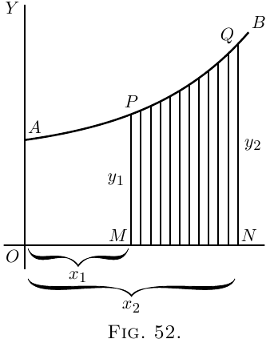
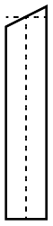

Let $AB$ (Figure 52) be a curve, the equation to which is known. That is, $y$ in this curve is some known function of $x$. Think of a piece of the curve from the point $P$ to the point $Q$.
Let a perpendicular $PM$ be dropped from $P$, and another $QN$ from the point $Q$. Then call $OM = x_1$ and $ON = x_2$, and the ordinates $PM = y_1$ and $QN = y_2$. We have thus marked out the area $PQNM$ that lies beneath the piece $PQ$. The problem is, how can we calculate the value of this area?
The secret of solving this problem is to conceive
the area as being divided up into a lot of narrow
strips, each of them being of the width $dx$. The
smaller we take $dx$, the more of them there will be
between $x_1$ and $x_2$. Now, the whole area is clearly
equal to the sum of the areas of all such strips. Our
business will then be to discover an expression for
the area of any one narrow strip, and to integrate it
so as to add together all the strips. Now think of
any one of the strips. It
will be like this:
being bounded between two vertical sides, with
a flat bottom $dx$, and with a slightly curved
sloping top.

Suppose we take its average
height as being $y$; then, as its width is $dx$, its
area will be $y\, dx$. And seeing that we may
take the width as narrow as we please, if we
only take it narrow enough its average height will be
the same as the height at the middle of it. Now
let us call the unknown value of the whole area $S$,
meaning surface. The area of one strip will be
simply a bit of the whole area, and may therefore
be called $dS$. So we may write
\[
\text{area of $1$ strip} = dS = y · dx.
\]
If then we add up all the strips, we get
\[
\text{total area $S$} = \int dS = \int y\, dx.
\]
So then our finding $S$ depends on whether we can
integrate $y · dx$ for the particular case, when we know
what the value of $y$ is as a function of $x$.
For instance, if you were told that for the particular
curve in question $y = b + ax^2$, no doubt you could put
that value into the expression and say: then I must
find $\int (b + ax^2)\, dx$.
That is all very well; but a little thought will show
you that something more must be done. Because the
area we are trying to find is not the area under the
whole length of the curve, but only the area limited
on the left by $PM$, and on the right by $QN$, it follows
that we must do something to define our area between
those "limits".
This introduces us to a new notion, namely that of
integrating between limits. We suppose $x$ to vary,
and for the present purpose we do not require any
value of $x$ below $x_1$ (that is $OM$), nor any value of $x$
above $x_2$ (that is $ON$). When an integral is to be
thus defined between two limits, we call the lower
of the two values the inferior limit, and the upper
value the superior limit. Any integral so limited
we designate as a definite integral, by way of distinguishing
it from a general integral to which no
limits are assigned.
In the symbols which give instructions to integrate,
the limits are marked by putting them at the top
and bottom respectively of the sign of integration.
Thus the instruction
\[
\int_{x=x_1}^{x=x_2} y · dx
\]
will be read: find the integral of $y · dx$ between the
inferior limit $x_1$ and the superior limit $x_2$.
Sometimes the thing is written more simply
\[
\int^{x_2}_{x_1} y · dx.
\]
Well, but how do you find an integral between limits,
when you have got these instructions?
Look again at Figure 52. Suppose we could
find the area under the larger piece of curve from
$A$ to $Q$, that is from $x = 0$ to $x = x_2$, naming the area
$AQNO$. Then, suppose we could find the area under
the smaller piece from $A$ to $P$, that is from $x = 0$ to
$x = x_1$, namely the area $APMO$. If then we were to
subtract the smaller area from the larger, we should
have left as a remainder the area $PQNM$, which is
what we want. Here we have the clue as to what
to do; the definite integral between the two limits is
the difference between the integral worked out for
the superior limit and the integral worked out for the
lower limit.
Let us then go ahead. First, find the general
integral thus:
\[
\int y\, dx,
\]
and, as $y = b + ax^2$ is the equation to the curve (Figure 52),
\[
\int (b + ax^2)\, dx
\]
is the general integral which we must find.
Doing the integration in question by the rule
, we get
\[
bx + \frac{a}{3} x^3 + C;
\]
and this will be the whole area from $0$ up to any
value of $x$ that we may assign.
Therefore, the larger area up to the superior limit $x_2$
will be
\[
bx_2 + \frac{a}{3} x_2^3 + C;
\]
and the smaller area up to the inferior limit $x_1$ will be
\[
bx_1 + \frac{a}{3} x_1^3 + C.
\]
Now, subtract the smaller from the larger, and we
get for the area $S$ the value,
\[
\text{area $S$} = b(x_2 - x_1) + \frac{a}{3}(x_2^3 - x_1^3).
\]
This is the answer we wanted. Let us give some
numerical values. Suppose $b = 10$, $a = 0.06$, and $x_2 = 8$
and $x_1 = 6$. Then the area $S$ is equal to
\begin{gather*}
10(8 - 6) + \frac{0.06}{3} (8^3 - 6^3) \\
\begin{aligned}
&= 20 + 0.02(512 - 216) \\
&= 20 + 0.02 × 296 \\
&= 20 + 5.92 \\
&= 25.92.
\end{aligned}
\end{gather*}
Let us here put down a symbolic way of stating
what we have ascertained about limits:
\[
\int^{x=x_2}_{x=x_1} y\, dx = y_2 - y_1,
\]
where $y_2$ is the integrated value of $y\, dx$ corresponding
to $x_2$, and $y_1$ that corresponding to $x_1$.
All integration between limits requires the difference
between two values to be thus found. Also note
that, in making the subtraction the added constant $C$
has disappeared.
Examples
(1) To familiarize ourselves with the process, let us
take a case of which we know the answer beforehand.
Let us find the area of the triangle (Figure 53), which
has base $x = 12$ and height $y = 4$. We know beforehand,
from obvious mensuration, that the answer will
come $24$.
Now, here we have as the “curve” a sloping line
for which the equation is
\[
y = \frac{x}{3}.
\]
The area in question will be
\[
\int^{x=12}_{x=0} y · dx = \int^{x=12}_{x=0} \frac{x}{3} · dx.
\]
Integrating $\dfrac{x}{3}\, dx$ (here), and putting down the
value of the general integral in square brackets with
the limits marked above and below, we get
\begin{align*}
\text{area}\;
&= \left[ \frac{1}{3} · \frac{1}{2} x^2 \right]^{x=12}_{x=0} + C \\
&= \left[ \frac{x^2}{6} \right]^{x=12}_{x=0} + C \\
&= \left[ \frac{12^2}{6} \right] - \left[ \frac{0^2}{6} \right] \\
&= \frac{144}{6} = 24.\quad Ans.
\end{align*}
Let us satisfy ourselves about this rather surprising
dodge of calculation, by testing it on a simple
example. Get some squared paper, preferably some
that is ruled in little squares of one-eighth inch or
one-tenth inch each way. On this squared paper
plot out the graph of the equation,
\[
y = \frac{x}{3}.
\]
The values to be plotted will be: